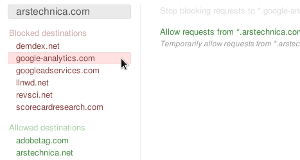
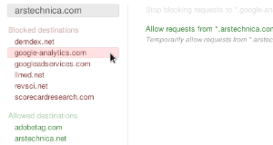
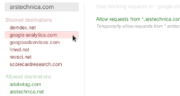

RequestPolicy is an extension for Mozilla browsers that increases your browsing privacy, security, and speed by giving you control over cross-site requests on pages you visit.
Cross-site requests are requests that your browser is told to make by a website you are visiting to a completely different website.
RequestPolicy Continued allows you to block all cross-site requests, and only allow specific ones (whitelisting), either manually, or by subscribing to premade policies (subscriptions) maintained by others. For easier usage, you can also keep allowing cross-site requests, but block some by manually blacklisting them, or by subscribing to blacklists maintained by others.

 Privacy
PrivacyWhile some cross-site requests are required for websites to work properly, they often result in advertising networks and other websites knowing your browsing habits, including specific pages you view throughout the day. Learn more about privacy...
 Security
SecurityCross-site requests are also used in attacks on users who are browsing the web. RequestPolicy Continued helps defending against dangerous attacks like Clickjacking and Cross-Site Request Forgery (CSRF), where your browser is told to make a request to another website and that other website thinks you (the person) meant to make the request. Learn more about security...
Learn how to use RequestPolicy Continued now!
 Frequently Asked Questions
Frequently Asked QuestionsSee the FAQ
 About RequestPolicyContinued
About RequestPolicyContinuedRequestPolicy Continued is a continuation of the original project from Justin Samuel by volunteers. It is based on the 1.0 beta version of RequestPolicy, which is a major rewrite and refactoring of the 0.5 version still available on Addons for Firefox. Currently we aim at releasing our first stable version – 1.0 – but there is still much to do. If you want to be informed about this milestone, you could subscribe to this issue. If you're interested, you can find a list of all open issues for version 1.0 here.
 There are still some compatibility issues when upgrading from the older 0.5 version. You can downgrade at any time though. A Firefox 38+ compatible version of RequestPolicy 0.5 is available at addons.mozilla.org
There are still some compatibility issues when upgrading from the older 0.5 version. You can downgrade at any time though. A Firefox 38+ compatible version of RequestPolicy 0.5 is available at addons.mozilla.org
Read more about RequestPolicyContinued...
Here are a few ways you can help make this project better!
Source code for RequestPolicy Continued is hosted at Github. Documentation for developers is available here
RequestPolicy Continued is Free Software distributed under the GPL v3
This documentation and website are under Creative Commons Attribution Share-Alike License. Sources are available at https://github.com/RequestPolicyContinued/requestpolicy/wiki. Website icons by Yusuke Kamiyamane